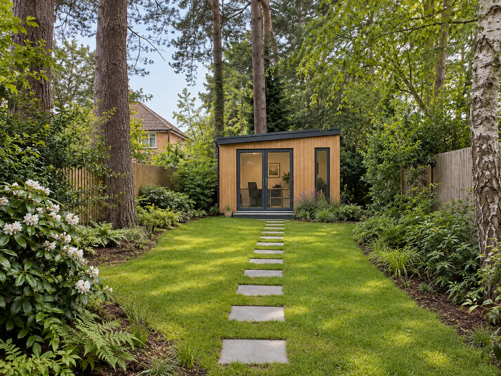

Clearer scope and price
We identify what needs checking so quotes and responsibilities can be agreed with fewer assumptions.

We use site evidence, practical experience and useful technology to find problems early, organise the work and keep your project moving.
Every garden has its own constraints. We bring together your brief, photographs, video and available site information to understand the layout, slopes, drainage concerns, boundaries and access for people, materials and equipment.
We flag hazards, open questions and dependencies before the schedule is set. A site visit, measured survey, utility check or qualified specialist assessment is arranged where the project needs one. Images and AI are useful planning inputs; they do not replace those checks.
We identify what needs checking so quotes and responsibilities can be agreed with fewer assumptions.
Access, deliveries, trades, approvals and the order of work are planned together, before they hold each other up.
We organise the options, questions and changes so you know what is agreed and what still needs a decision.
AI helps us sort site images and notes, explore practical options, build checklists and track issues and dependencies. We use it to spend less time on administration and more time resolving the details that matter to your garden.
We review its output and agree the plan with the relevant designers, trades and specialists. We only use your project information for the work we agree with you and explain any external tools used to process your images or data.
The aim is less avoidable rework and more efficient coordination. We reflect that efficiency in the scope and price we propose, without claiming a fixed saving or skipping the checks your project needs.
Garden rooms, outbuildings, decking, changes to levels and work near protected features can raise planning or other approval questions. We help you establish what needs checking early, including whether permitted development rights may apply to your property and proposal.
If an application is needed, we can coordinate the drawings, site information and supporting material with an architect or planning specialist, help organise the submission and track questions and decisions with you. We agree that scope and any professional or application fees before work starts. The local planning authority decides the application; planning permission is never guaranteed.
Planning permission and building regulations are separate questions. We make sure the right professional checks are included where relevant. For general guidance, see the Planning Portal’s outbuilding advice.
Ask us about your plansTell us what you have in mind and where the site is. We will suggest the right next step: a straightforward conversation, a site visit, a design or a more detailed review. We agree any fee before booking.
See the three steps